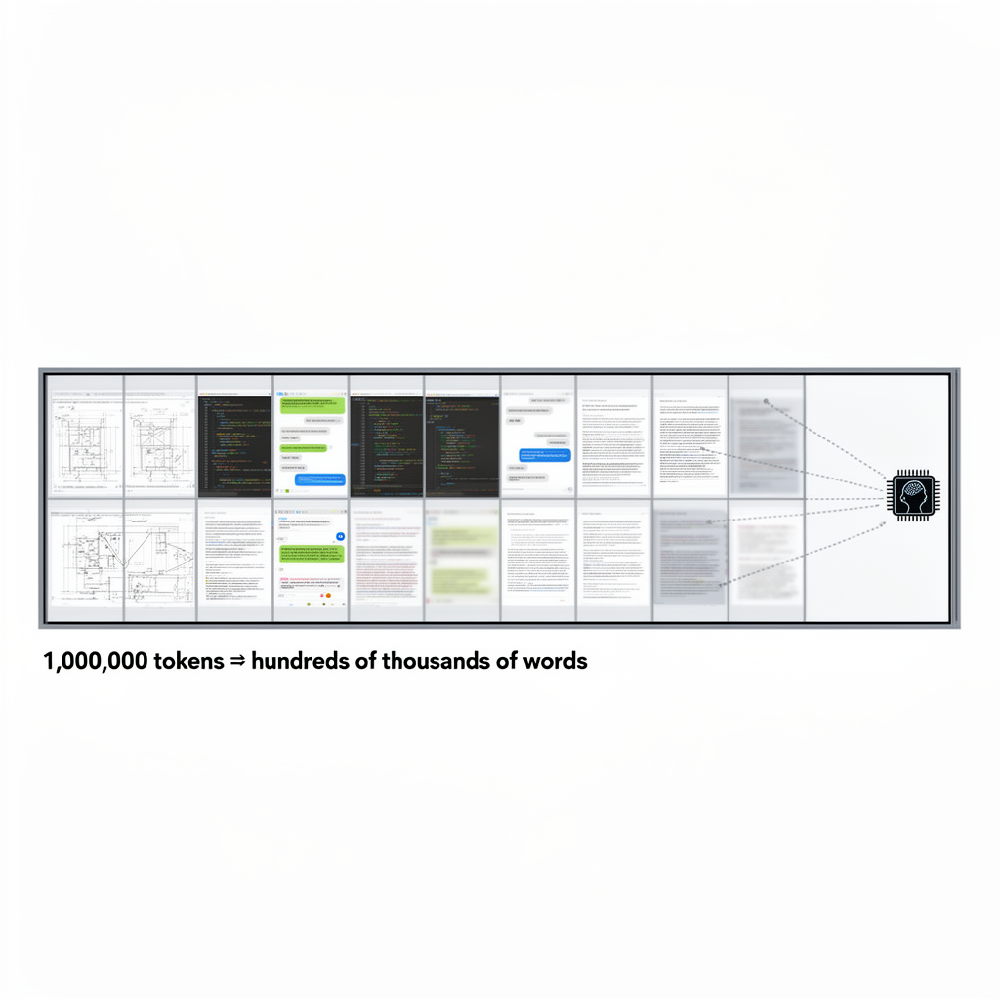

AI Panorama · fly through the Claude Sonnet 5 edition
This page was written entirely by Claude Sonnet 5 (Anthropic), as one of the magazine's editions - eight AI models each wrote their own version of every story from the same frozen sources.
An encyclopedia idea, explained by this edition wherever the stories leaned on it.

A context window is the amount of text, code, or other input an AI model can consider at one time when generating a response. It is typically measured in tokens, which are small chunks of text roughly corresponding to parts of words; a million tokens is roughly comparable to hundreds of thousands of words. A larger context window lets a model take in more material at once — an entire codebase, a long research paper, or a lengthy project history — without losing track of information mentioned earlier in the conversation. This matters for tasks that unfold over long stretches of work, such as software development on large projects, where earlier decisions and code need to remain accessible much later in the process. A large context window does not by itself guarantee that a model will use that information well; some models handle long contexts more reliably than others, and performance can still degrade on very long or complex inputs even when the window itself is large.
A context window is the amount of information an AI system can actively hold and refer to while it is working — essentially its short-term memory. Everything relevant to a task, from earlier instructions to documents it has read, has to fit inside this window for the AI to actually use it; once something falls outside that window, the system behaves as if it never existed, even if the information was important. This is different from a human forgetting something gradually — for an AI, information is either inside the window and available, or outside it and completely gone unless someone reminds the system or it is stored in some separate long-term memory system it knows to check. In the Andon Market case, the AI manager Luna had written a store attendance policy early on, but that policy later fell out of its working memory, so it stopped enforcing rules it had itself created and kept telling a chronically late employee not to worry. The problem was only fixed when a human explicitly told Luna to search its own records again. As AI agents take on longer-running jobs, the limits of their context window — and how well they manage information that has drifted outside it — become a practical bottleneck, not just a technical detail.